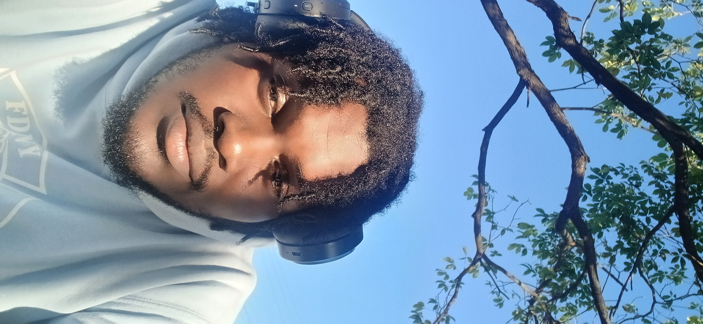

About Me
Hello My name is Jaden Williams,Im currently 19 years old,I Live in Kingston,St.Andrew,I am a univeristy student at the Univseristy of Technology.

Resume
I am a dedicated student with a strong passion for technology and innovation making me want to became a software Enginer.
- Education: University of Technology, Computer Science (2022–Present)
- Skills: Programming languages (Python, Java), Web development (HTML, CSS, JavaScript), Problem-solving, Team collaboration
- Experience: Intern at Tech Company (Summer 2023), Volunteer at Local Coding Bootcamp (2022–Present)
Vision & Mission
Vision: I want a back end developer at a top company.
Mission: I'm learning/practicing all the necessary things to get there.
Personality & Hero
- Mahoraga: In school, challenges like tough assignments or unexpected exam questions require adaptability. Just as Mahoraga evolves to survive, i have learn to adjust my study strategies, seek new resources, and refine my problem‑solving skills
- Vergil: Success in academics often comes from consistent practice and focus. Vergil’s calm, methodical approach mirrors how you prepare for exams, refine coding projects, or polish essays
- Elena:She represents the importance of bringing positivity and creativity into learning. Whether designing a web page, solving a database problem, or presenting a project, Elena’s energy reminds you to enjoy the process and express yourself.
Hero background, motto/quote, why they inspire me.
Personal Development
In my growth as a software engineer, Ive realized that sucess comes down to a few simple but powerfull habits: setting clear goals so i know exaclty what im working toward,managing my time to focus on what truly maters surrounding myself with people who inspire and challenge me and committing to life long learning so i stay adpatable in a fast chaning industry.